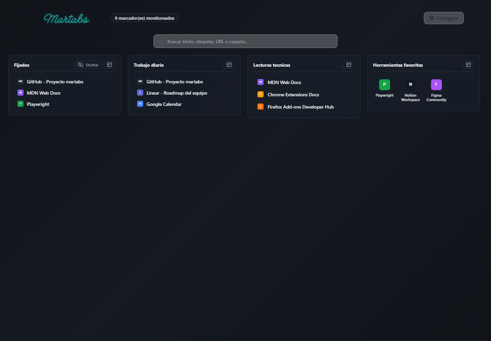

martabs
A private, local-first new tab dashboard for organizing browser bookmarks visually.

What it does
- Replaces the new tab page with a fast bookmark dashboard.
- Searches bookmarks locally by title, URL, domain, folder and tags.
- Supports pinned bookmarks, visual folder modes, local ordering and bookmark editing.
- Stores settings, tags, ordering and optional previews locally in the browser.
- Does not use telemetry, analytics or third-party services.
Support
For questions, issues or privacy requests, contact martabs.extension@gmail.com.